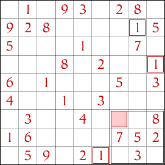
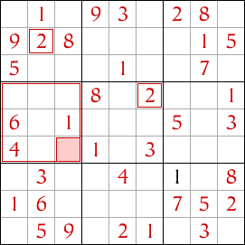
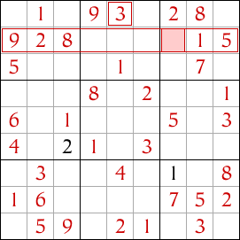

Strictement Sudoku - Sudoku moyen avec techniques de résolution
La deuxième technique la plus courante pour résoudre un puzzle Sudoku est la technique du Singleton Caché. Vous avez maintenant maîtrisé la technique du Singleton Nu et vous pouvez commencer à aborder des puzzles plus difficiles. Avant de passer aux puzzles de sudoku difficiles, vous devez comprendre et pratiquer cette technique. Allons-y.
Technique du Singleton Caché
Parfois, il n'y a qu'une seule case dans un groupe où un chiffre particulier est autorisé. Selon les règles du sudoku, chaque ligne, colonne et bloc doit contenir chaque chiffre exactement une fois.
Regardez le bloc inférieur droit de neuf cases dans ce sudoku ci-dessous. L'une de ces neuf cases doit contenir le chiffre 1, mais laquelle ? Cela ne peut pas être la case vide dans la colonne la plus à droite, car cette colonne contient déjà un 1 et le chiffre n'est pas autorisé à apparaître deux fois dans une colonne, une ligne ou un bloc. La colonne suivante contient également un 1, donc la case vide dans cette colonne est également interdite.
Cela laisse deux cases vides dans la septième colonne. Mais la ligne du bas dans le sudoku contient également déjà un chiffre 1, donc les cases vides dans cette ligne sont également interdites.
Cela laisse une seule case dans le bloc inférieur droit, la case mise en surbrillance, qui est autorisée à contenir un 1. C'est le singleton caché et nous pouvons y placer un 1.
Maintenant, regardez le bloc central gauche de trois cases. Où va le chiffre 2 dans ce bloc ? Les deux cases mises en surbrillance contiennent déjà un 2, interdisant le chiffre dans les autres cases de la deuxième colonne et de la quatrième ligne du sudoku. Cela laisse une seule case dans le bloc central gauche où le chiffre 2 est autorisé, la case mise en surbrillance, donc nous y plaçons un 2.
Jusqu'à présent, nous avons appliqué le singleton caché aux blocs, en utilisant les chiffres dans les lignes et les colonnes qui croisent le bloc pour trouver où un chiffre n'est pas autorisé. Nous pouvons également appliquer la technique du singleton caché aux lignes et aux colonnes.
Regardez la deuxième ligne dans le sudoku. Cette ligne doit contenir un 3 dans exactement une case. Il y a quatre cases vides dans la ligne, mais lesquelles sont autorisées à contenir le chiffre 3 ? Trois d'entre elles se trouvent dans le bloc central supérieur de neuf cases, et ce bloc contient déjà le chiffre 3 dans une autre case. Donc, aucune de ces trois cases ne peut contenir un 3. Cela laisse une seule case dans la deuxième ligne où un 3 est autorisé, la case mise en surbrillance, donc nous y plaçons un 3.
Ce sudoku peut être complété en utilisant uniquement la technique du singleton caché, bien que parfois ils soient difficiles à trouver et que vous puissiez trouver plus facile d'utiliser la technique du singleton nu lorsque les singletons cachés sont difficiles à repérer.